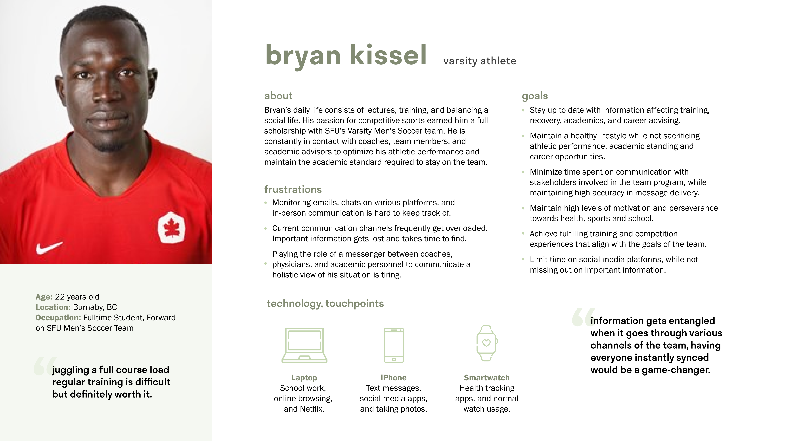
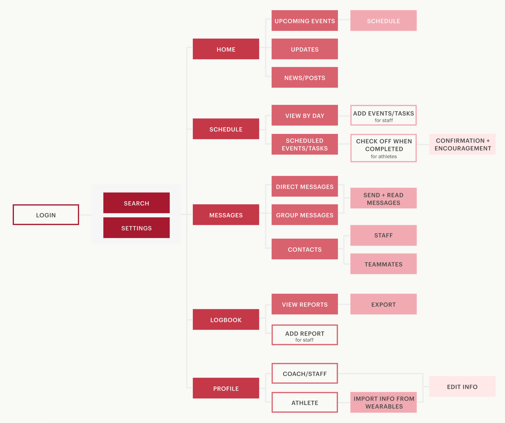
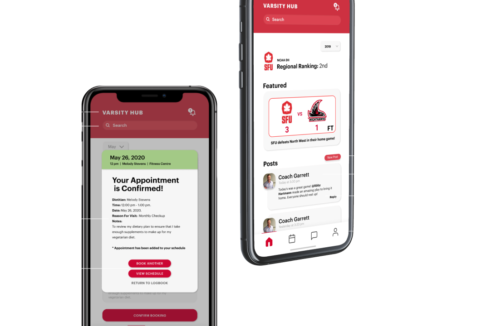
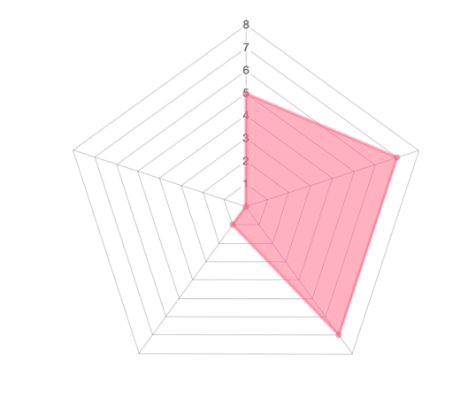

painless doctor's notes
When you're ill or injured the last thing you want to do is call, fax, or email every office, coach, and teacher. Varsity Hub's connected database allows you to request and distribute paperwork in one simple step.
VarsityHub is a digital application platform providing streamlined communication, intuitive scheduling, and academic integration for post-secondary athletes, coaches, and staff.
Scenario: you're Abby Hartman, an SFU student on the Varsity Volleyball Team.
mobile | tablet | desktop | watch
An 8 week long project completed for SFU course IAT 334 in five person team:
Alex Aguilar, Melissa Chan, David Cheung, Taha Ben Esmael, and myself.
My roles were project management, content direction, copywriting, and visual/interface design support.
Figma | HTML & CSS | Nielsen Norman's Usability Heuristics
Varisty Hub syncs with your instituition's existing online learning platform during setup to connect you with your team and conveniently present relevant academic information like teaching staff and course schedules when appropriate.
Having all of your academic and athletic engagements consolidated in one location relieves stress, reduces confusion, and allows Varisty Hub to notify you of any conflicts, so you can resolve the issue and get back to the game.
No more exhausting phone tag; your team's physicians, dieticians, and trainers information and availability is right at your fingertips. Booking through Varisty Hub provides quick and accessible health care when convenient for you.
When you're ill or injured the last thing you want to do is call, fax, or email every office, coach, and teacher. Varsity Hub's connected database allows you to request and distribute paperwork in one simple step.
The days of convoluted group conversations and lost communications are over. Varsity Hub's messaging tab consolodates relevant information and includes a built-in feature for receipt confirmation.

Our team created surveys for both players and athletic staff to better understand target user goals and frustrations with current management systems.

Over 20 participants said that they enjoyed the convenience and simplicity of face-to-face, email, and messaging communication methods, but reported frustrations with their lack of reliability, consistency, and clarity.
We used insights derived from our research to develop potential user personas to design with clarity and intention.
Mapping our personas’ cognitive patterns during application usage helped us sympathize with their perspective and anticipate and prevent any negative interactions.

Our initial flow charts gave us an overview of the intended application structure and potential interactions to design. This flow was eventually refined based on industry critique; the major change being the combination of the Schedule and Logbook features.
The interface design began with these low-fidelity mockups created for all major screens, establishing structure and a basic design language.
The team determined that the app's color theme should coordinate with that of the academic instituitions.
Our protoype pairs Simon Fraser University's red palette with the typeface Graphik in the weights and heading styles seen here.
Flat Design and Neumorphism style cues were combined to keep the application simple and clean while acknowledging relevant design trends.
Our first interactive mockup afforded us the ability to conduct preliminary interface testing and obtain feedback on the feature set and visual design.
We used a System Usability Scale to grade user feedback. Less than half thought it was unnecessarily complex and more than half felt very confident using the system and would do so frequently.
We identified a total of 20 design issues that broke Nielsen’s heurisitc principles, and ranked them by severity and frequency, as seen in the radar chart.
Following user testing, our team remedied broken heurisitcs, refined the visual design style, and implemented the necessary design solutions, resulting in a fully-functioning, polished prototype.